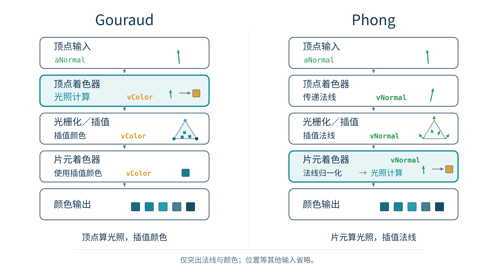
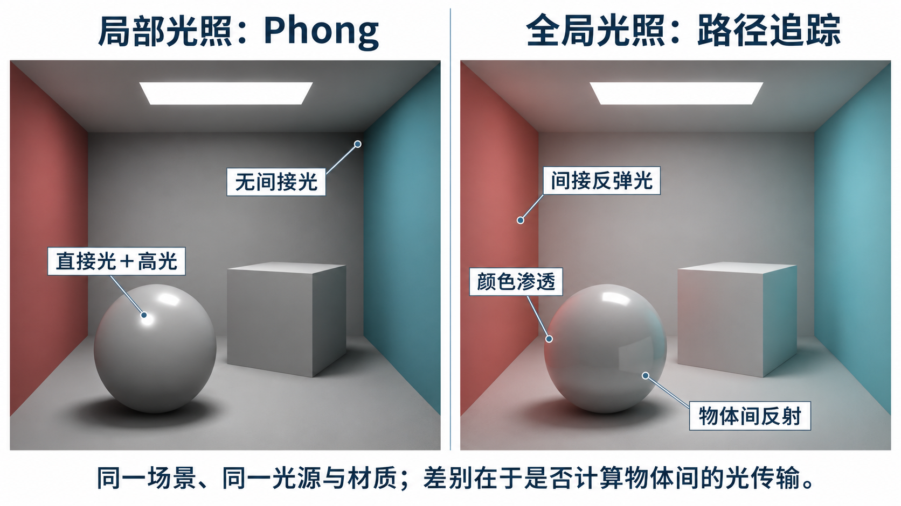

如何将光照模型接入已学过的模型—观察—投影流水线？
JS应用程序、顶点着色器、片元着色器都能参与光照；计算位置改变效率和视觉效果。
aPosition、aNormal：随顶点变化。
变换矩阵、光源位置、材质参数。
顶点着色器输出，光栅化插值后供片元使用。
#version 300 es
in vec4 aPosition;
in vec3 aNormal;
uniform mat4 uModelView, uProjection;
uniform mat3 uNormalMatrix;
out vec3 vNormal;
// main中：
vNormal = normalize(uNormalMatrix * aNormal);
gl_Position = uProjection * uModelView * aPosition;// 顶点着色器：计算Phong/Blinn-Phong分量
out vec3 vColor;
// ... N、L、V以及光照模型计算后
vColor = ambient + diffuse + specular;#version 300 es
precision highp float;
in vec3 vColor;
out vec4 fragColor;
void main() {
fragColor = vec4(vColor, 1.0);
}#version 300 es
precision highp float;
in vec3 vNormal;
in vec3 vEyePosition;
uniform vec3 uLightPositionEye;
out vec4 fragColor;
// main中先把插值法向量重新单位化
vec3 N = normalize(vNormal);
vec3 L = normalize(uLightPositionEye-vEyePosition);
预设观察条件：左右分屏同步渲染三维模型（球体/犹他茶壶/环面结），底部同屏对照 GLSL ES 3.00 顶点着色器与片元着色器真实源码；点击流程图节点可联动高亮关键计算行。
插值后的法向量是否normalize？
N、L、V是否使用统一坐标空间？
非均匀缩放后是否正确变换法向量？
保持第五章的Model、View、Projection，实现一个可切换着色算法的三维对象。

根据视觉表达需要，刻意使用色阶、描边等效果。
关注更合理的材质和能量传播；此处仅建立后续学习位置。
in vec3 vNormal; // 由光栅化插值得到
float intensity = max(dot(vNormal, L), 0.0);